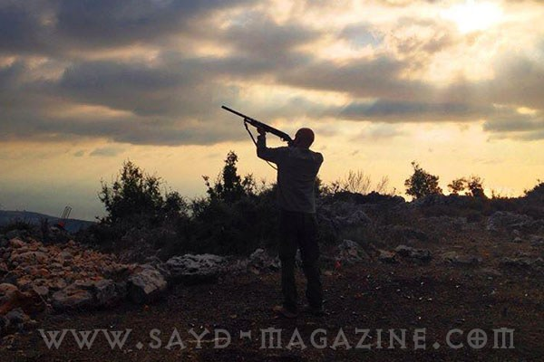

{kind=link}

لن يصدر “المجلس الأعلى للصيد البري” بناء على توصية من وزير البيئة محمد المشنوق قراراً بفتح موسع الصيد البري للعام ٢٠١٦ الذي يبدأ في ١٥ ايلول (سبتمبر)، ويستمر لغاية ٣١ كانون الثاني (يناير). لا يشكل هذا القرار، أو بالأحرى “اللاقرار” أي مفاجأة بالنسبة لمتابعي قانون الصيد البري وآليات انفاذه، منذ أن تمت المصادقة عليه في المجلس النيابي عام ٢٠٠٤، وارتكبت الخطيئة الكبرى بأن وضعت “وزارة البيئة” وصية على تطبيق هذا القانون. صدرت جميع المراسيم التنظيمية لقانون الصيد، لكن القانون رقم 580 المتعلق بالصيد البري، والذي ابصر النور في آذار (مارس) العام 2004، لم يطبق حتى تاريخيه لاسباب عديدة، أهمها استفادة تجار السلاح والخرطوش وتجار لحوم الطيور البرية من فوضى الصيد العشوائي لجميع انواع الطيور المقيمة والمهاجرة، وغياب القرار الجدي لدى الضابطة العدلية المولجة بتطبيق قانون الصيد عن القيام بمهامها وتذرعها بالأوضاع الامنية في لبنان. عادة كان الموظفون المعنيون في وزارة البيئة، يحيلون أسباب عدم إعلان موسم الصيد إلى التأخر في إقرار المراسيم التنفيذية، لكن هؤلاء لا يملكون أجوبة على مراجعات مئات الصياديين الذين يرغبون ان يصطادوا تحت سقف القانون وليس من خلال خرقه؟ حجتهم الوحيدة التي استخدمت العام الماضي وتم تكرارها هذا العام، ان هناك برنامج كمبيوتر تم تصميمه وربطه بالنوادي المخولة اجراء امتحانات صيد، وان تركيبه وربطه بالوزارة يحتاج إلى بعض الوقت! ويمنع الصيد في لبنان بناء على قرار مجلس الوزراء الرقم ٣٧ الصادر عام ١٩٩٧، لكن الصيد العشوائي إلى تزايد في جميع المواسم والفصول، ويندر أن يتم اعتقال صياد في لبنان من قبل القوى الامنية، وتكتفي مخافر الدرك في توقيف الصيادين الذين يتسببون بجرح أو قتل بعضهم بسبب فوضى اطلاق النار على الطيور. وتزخر أعداد الجريدة الرسمية التي تصدر أسبوعياً برزمة من القرارات التي تصدر عن وزيري الداخلية والدفاع بمنح رخص الاتجار بأسلحة الصيد وذخائرها، ورخصة بيع بارود الصيد بالمفرق، لكن يندر ان يتم توقيف أي صياد يحمل سلاح صيد، أو بحوزته طرائد صيد، حتى لو كانت تشمل بعض الانواع المهددة بالانقراض، لا بل ان الاحكام القضائية التي صدرت بحق بعض المجرمين الذي قتلوا طيورا مهاجرة لا تصلح للاكل، كانت تخفيفية، وحتى اللحظة لا يعتبر المحامون العامون البيئيون ان مخالفات الصيد البري مسألة ذات أولوية في الشكاوى والاخبارات القضائية التي يتلقونها. وأظهرت الإحصاءات الصادرة عن وزارة الداخلية اللبنانية أن عدد مخالفات حظر الصيد لم يزد عن ٩٠٠ مخالفة، خلال الفترة الواقعة بين عامي 1995 و 2005 مع إحالة 384 منها إلى المحاكم القضائية. يعرف وزير البيئة محمد المشنوق انه لا يملك وحده قرار اعلان موسم الصيد، وان هذا القرار يحتاج إلى تنسيق مع مختلف الوزرات، لا سيما وزير الداخلية نهاد المشنوق، وقيادة الجيش والمجلس الاعلى للدفاع، لكن المطلوب من وزيري البيئة والداخلية جرأة الاعلان انهما غير قادرين على تطبيق قانون الصيد في اي بقعة من الاراضي اللبنانية؟ اجتماع يتيم عقده المجلس الاعلى للصيد في ٧ كانون الثاني (يناير) ٢٠١٦ جرى خلاله التداول في تحديد تفاصيل وعناصر طابع الصيد البري، لا سيما أن قانون نظام الصيد في لبنان قد نص في المادة 21 منه، على أن رسم رخصة الصيد من قبل وزارة المال يحدد بناء على اقتراح وزير الوصاية، ويستوفى هذا الرسم بموجب طابع خاص يسمى “طابع الصيد البري”، تصدره وزارة المال وفقا للتفاصيل والعناصر المعتمدة من قبل المجلس والمصدق عليها من قبل وزيري المال والبيئة. لكن هذا الطابع الذي صمم قبل سنوات لم يصدر بعد عن وزارة المالية ما يفوت على الخزينة مليارات الليرات. وفي ١٩ نيسان (أبريل) ٢٠١٦ واثناء اطلاق طيور حجل في بلدة اهمج، أعلن المشنوق أن لبنان يواجه في كارثة بيئية على مستوى الصيد البري، فهناك ليس فقط الصيد الجائر، بل الصيد غير القانوني، ولا يمكن أن نضع وراء كل مواطن شرطيا أو خفير أحراج (…) رفضنا افتتاح موسمه، لماذا؟ لأنه لا يوجد صيادون يحملون رخص صيد، بكل هذه البساطة. فهم لم يستكملوا هذه الرخص، وليس كل من حمل سلاحا صيادا، وهناك امتحانات قبل الحصول على رخصة من وزارة البيئة. يطلق الوزير المشنوق مثل هذا التصريح متباهياً انه لن يفتح موسم الصيد، ناسياً أو متناسياً الارقام التي هي أصدق من جميع التصريحات والعنتريات التي لم تحم طائراً واحداً. أكثر من ٣٠ مليون طلقة خرطوش تباع سنوياً في السوق اللبناني، وتجدد وزارة الداخلية سنوياً ما يقارب ٧٠٠ ترخيص لمحال بيع الخرطوش ومصانع انتاج الخرطوش ورخص استيراد البارود والرصاص للتصنيع المحلي. أما حصة محلات بيع اسلحة الصيد ولوازمها من السوق الاعلاني فلا تقل عن ٥ مليون دولار اميركي سنوياً. في المقابل يضيع على الخزينة اللبنانية سنوياً ما يزيد عن ٢٠٠ مليون دولار اميركي نتيجة عدم تجديد أو اصدار رخصة الصيد والتراخيص الاخرى المرفقة بها، وبوليصية التأمين الإلزامية التي يقدر مجموعها بنحو ٤٥٠ دولار اميركي سنوياً لكل صياد، في حين يزيد عدد الصيادين اللبنانيين عن ٥٠٠ الف صياد. ويحدد المرسوم المتعلق بتحديد بوليصة التأمين ضد الغير الإلزامية لكل صياد، السقف الاعلى للتغطية في حال الوفاة بـ 75 مليون ليرة، ويتوقع ان يحدد سعر هذه البوليصة بـ 50 دولار أميركي. لكن جمعية شركات الضمان لم تبادر إلى اصدار هذه البولصية بانتظار فتح الموسم رسمياً من قبل وزارة البيئة، الامر الذي يضيع على شركات التأمين والاقتصاد اللبناني ما لا يقل عن ٢٥ مليون دولار سنوياً. وفي مقابل تجاهل وزارة البيئة تفعيل وتنظيم الصيد الشرعي، بحجة غياب القدرة على انفاذ القانون في جميع الاراضي اللبنانية، أطلقت جمعية حماية الطبيعة في لبنان، مبادرة لتحديد مناطق للصيد المسؤول، مقابل حظر الصيد في اي منطقة خارج هذه المناطق الموزعة على مختلف المحافظات اللبنانية. ويفترض ان يحصر الصيد داخل هذه المناطق واغلبها في المشاعات العامة للبلديات، بحيث تكون واضحة المعالم، ومحاطة بالحراس لضمان الدخول المراقب والآمن للصيادين اليها، وضمان خروجهم بأعداد من الطرائد المسموح بصيدها وفق ما ينص عليه القانون، بطريقة تسمح بمعاقبة المخالفين. لكن وزارة البيئة تجاهلت هذه المبادرة وتعاطت معها باستخفاف رغم انها، بإجماع الخبراء، المدخل الوحيد لبدء تطبيق قانون الصيد، خصوصاً ان هناك مئات الصيادين الذي يرغبون بتنظيم الصيد ضمن هذه المناطق، نظراً للضرر اللاحق بهم نتيجة الصيد العشوائي. بسام القنطار مدير تحرير موقع greenarea.me
من كل وادي خبر